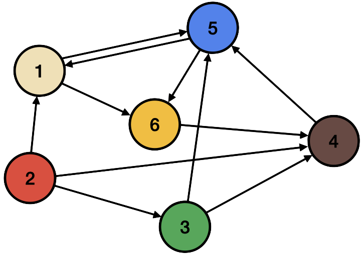

Projects
Here are some representative publications in chronological order. The complete list of publications can be found on Google Scholar.

Unsupervised Extraction of Test Scenarios from Time-Series Sensor Data using Trace Graphs
We introduce an unsupervised approach to extract test scenarios from time-series sensor data using trace graphs.